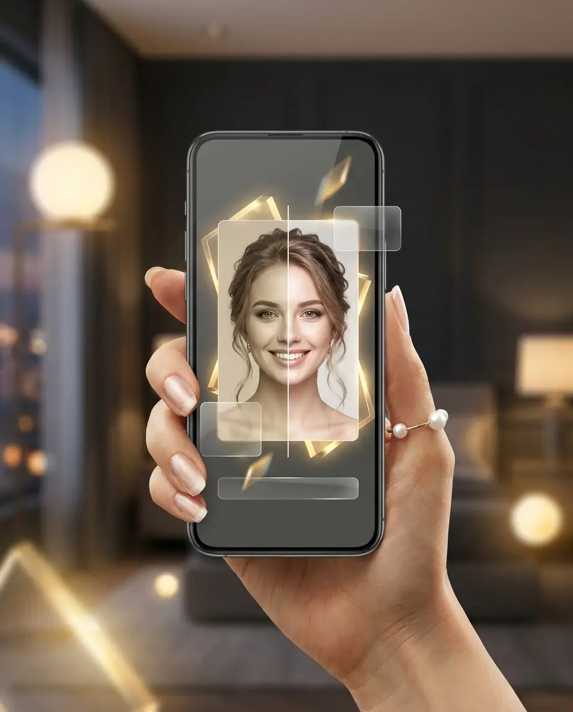

Сделайте селфи
ZubiLook проверит свет, положение лица и видимость улыбки.
Меньше неудачных фото и пустых генераций.
ZubiLook превращает селфи в AI-визуализацию возможной улыбки, помогает сравнить стили и отправить заявку в клинику для точной оценки.
Это AI-визуализация, а не диагноз, план лечения или гарантия результата.
Фото используется для создания визуализации. Клиника получает заявку только после вашего действия.
Свет, анфас, видимая улыбка — до генерации.
Четыре эстетики улыбки в понятном сравнении.
Только после выбора пользователя и согласия.
Селфи → проверка кадра → стиль → AI-визуализация → сравнение до/после → заявка в клинику.

Видео и изображения — концепт-демонстрация интерфейса, созданы с помощью AI. Это визуализация-ориентир, а не клинический результат.
До консультации человек часто не понимает, какой результат хочет, сколько это может стоить и в какую клинику обращаться. ZubiLook делает первый шаг визуальным: показывает возможный образ улыбки и превращает интерес в понятный запрос.
ZubiLook проверит свет, положение лица и видимость улыбки.
Меньше неудачных фото и пустых генераций.
Естественный белый, ровная улыбка, виниры или Голливудская.
Выбор направления вместо «сделайте красиво».
Система создаёт возможный образ улыбки.
Появляется понятный визуальный ориентир.
Пользователь видит разницу и эмоционально понимает результат.
Интерес становится намерением.
Выбранная клиника получает контакт и визуализацию.
Консультация начинается с понятного запроса.
Приложение подсказывает, если мало света, лицо не анфас или улыбка плохо видна.
Пользователь выбирает один из четырёх направлений улыбки.
ZubiLook создаёт изображение возможного результата. Это ориентир, не медицинское заключение.
Пользователь видит примерный диапазон и понимает, что точная стоимость зависит от клиники.
Контакт и визуализация отправляются только после действия пользователя.
Мягкое осветление без ощущения искусственной улыбки.
Акцент на симметрии и аккуратной линии зубов.
Более выраженная эстетика формы и тона.
Максимально яркий визуальный эффект для тех, кто хочет заметную трансформацию.
Доступные варианты являются визуальными стилями. Реальный план лечения определяет врач.
В приложении результат показывается слайдером «до/после» — двигайте разделитель, чтобы увидеть разницу. Ниже — интерактивная иллюстрация интерфейса.
Портрет и «после» созданы AI (изменены только зубы) — демонстрация того, как выглядит визуализация в приложении. Не клинический результат: итог реального лечения может отличаться.
Когда человек впервые видит себя с другой улыбкой, меняется выражение лица, осанка и уверенность. Именно этот момент ZubiLook делает возможным ещё до консультации.
Ролик создан с помощью AI. Финальный кадр — «представление себя» с новой улыбкой на основе визуализации, а не результат лечения.
ZubiLook помогает увидеть возможное направление, сравнить варианты и обратиться в клинику уже с понятным запросом.
Клиника получает заявку от человека, который уже увидел возможный результат, выбрал направление улыбки и готов обсудить консультацию.
ZubiLook не определяет заболевания и не заменяет врача.
Реальный план зависит от осмотра, снимков и консультации.
Фото используется для визуализации. Заявка в клинику отправляется только после действия пользователя.
Генерация проходит через защищённый сервер — так защищены ключи, лимиты и стоимость.
Пользователь сам выбирает стиль и клинику.
AI-изображение может отличаться от реального клинического результата.
ZubiLook готовится к beta-запуску. Пользователи могут оставить заявку на ранний доступ, а клиники — подключиться к пилоту.
Нет. ZubiLook создаёт AI-визуализацию возможного эстетического результата. Диагноз и план лечения определяет врач.
Нет, не только по селфи. ZubiLook может показать ориентир, но точная стоимость зависит от консультации, диагностики и клиники.
Нет. Заявка отправляется только после вашего действия.
Приложение подскажет, что исправить: свет, положение лица или видимость улыбки.
Нет. Сейчас продукт сфокусирован на квалифицированных заявках для выбранной клиники.
Сделайте первый шаг до консультации: получите AI-визуализацию и решите, какой результат хотите обсудить с клиникой.
AI-визуализация не заменяет стоматолога и не гарантирует клинический результат.